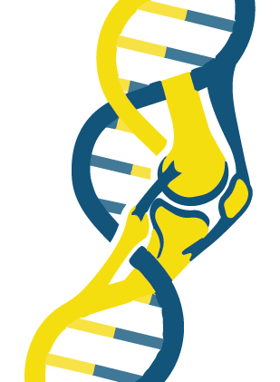

Clarissa R. Coveney, DPhil
K99/R00-Funded Postdoctoral Researcher
Department of Human Evolutionary Biology
Harvard University
I am a musculoskeletal development and disease biologist studying how mechanical forces, genetic variation, and epigenetic regulation shape skeletal development, tissue homeostasis, and disease risk.

About Me
I am a K99/R00-funded postdoctoral researcher in Dr. Terence Capellini’s laboratory at Harvard University. My research integrates mechanobiology, evolutionary biology, functional genomics, and epigenetics to understand how genetic and environmental factors shape musculoskeletal development, skeletal morphology, and disease risk.
I’m a musculoskeletal development and disease biologist fascinated by how mechanical forces and genetic variation interact to shape skeletal form, tissue homeostasis, and disease risk. As a postdoc, I have investigated how context-dependent non-coding regulatory elements influence joint morphology and cartilage biology, including through mouse models, humanized variants, and high-throughput functional genomic approaches such as Massively Parallel Reporter Assays. I have also studied how ancient Neandertal derived variants continue to influence modern human skeletal traits and disease susceptibility. Moving forward, my research will focus on mechanoepigenetics: how mechanical forces reshape chromatin structure and enhancer activity to regulate gene expression. My central question is: how do mechanical environments interact with genetic and epigenetic regulation to shape skeletal development, adaptation, and disease—and can these mechanisms be leveraged to develop new therapeutic strategies?
I completed my DPhil in Molecular and Cellular Medicine at the University of Oxford, where I studied the role of a potential novel mechanosensor (the primary cilium) in postnatal joint maturation, cartilage homeostasis, and disease. This experience imparted me with a fascination with the human skeleton and a dream to one day find a treatment for musculoskeletal diseases.

Research Program
My research program explores mechanoepigenetics—how mechanical forces regulate gene expression through changes in chromatin structure, enhancer activity, and other epigenetic mechanisms—and how these processes interact with genetic variation to shape cell identity, tissue development, adaptation, and disease risk.
I aim to combine biomechanical models, single-cell multiomics, spatial transcriptomics, chromatin conformation assays, and functional genomic screens to identify mechanically responsive genetic variants and regulatory regions involved in skeletal development and musculoskeletal disease.
Currently
In my postdoctoral research, I study the functional effects of regulatory variants associated with skeletal traits and disease. My work includes investigating regulatory elements at the GDF5 locus, testing ancient Neandertal variants in musculoskeletal tissues, and applying high-throughput genomic technologies to understand context-dependent gene regulation.
Previously
During my DPhil at the Kennedy Institute of Rheumatology, University of Oxford, I investigated the role of the primary cilium and the ciliary protein IFT88 in cartilage homeostasis, growth plate maturation, mechanoadaptation, and osteoarthritis.
Outside the Lab
Outside the laboratory, I am a keen baker, reader, and runner. I have run marathons in Helsinki, Edinburgh, and Chicago, completed a half iron man, and ultra-marathons. In another life, I was an international-level coxswain winning the Head of the Charles in 2022, and I competed in the Reserve Oxford-Cambridge Boat Race in 2017.
I enjoy the parallels between scientific research and endurance sport: both require teamwork, stamina, attention to detail, and the ability to work toward a long-term goal.
Contact
I am happy to discuss research collaborations, mentoring, and academic opportunities.